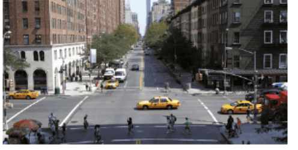

By the end of this exercise, you can show a visitor around a city using ten New York city words and the American English words for five British ones.
Free Year 8 English practice (A2): read a New York taxi driver’s tour of the city, practise city words, British and American English, and describing a photo.
Think first, then read the text and describe the situation.
David Singh: A traffic jam! It's always bad on the Brooklyn Bridge during rush hour. And last Monday they started roadwork here too. Don't even ask me what it's like in the winters. Two years ago we had so much snow that I didn't get into the city at all on some days! I live in Queens, but I like to work in downtown Manhattan, because that's where the money is!
Anyway, you can get a very good look at the New York skyline from here. I never get tired of it – let me tell you about the landmarks. That's One World Trade Center there. Those skyscrapers over there are on Wall Street, the financial center of the world. Can you see the Empire State Building in the distance? They built it in the early 1930s. With its 102 stories it was the tallest building in the world back then.
Rockefeller Center is just a few blocks away. You should go up there while you're here, the view of Manhattan from the top is really something.
How long are you here for, anyway? If you only have one day, I say: buy a bagel and a coffee early in the morning and go for a walk in Central Park. There are trees, lakes, playgrounds, a zoo and lots more.
After that check out the Metropolitan Museum of Art. It only had a collection of 174 pieces of art when it opened in the 19th century, but today it's huge.
Next, take the subway at 86th Street and Lexington Avenue to Grand Central Station. When you're in there, look up. Fun fact: the star signs on the ceiling aren't correct. Why did no one notice when they put them up there? I've no idea.
Around the corner there's a hot dog cart. It belongs to my friend Nick. Remember the name – he does the best hot dogs in New York!
In the afternoon you should go shopping and finish the day with a Broadway show. Just make sure you walk far enough to get to Times Square too. At last, the lights are green again. Now, let's get moving.
All three answers are needed before you can continue.
Choose right or wrong, then cite the sentence from the text that proves your answer. You can scroll back to the text with the step bar at the top.
All six choices and all six citations are needed before you can continue.
Find the word that does not belong, then match each city word with its definition.
David Singh is American. Choose the American English word or spelling he would use.
Use the useful phrases in each task. Write in full sentences.

Tip: city words from Exercise C will help you — intersection, sidewalk, skyscraper, public transport.
Review your answers below, then send them to your teacher.
Click the button below to send your answers directly to your teacher.